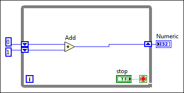

You can create stacked shift register terminals on the left side of a loop to remember multiple previous iterations and carry those values to the next iterations. This technique is useful for averaging data points.
Complete the following steps to configure a shift register to carry over more than one previous value to the next iteration.
Stacked shift registers can occur only on the left side of the loop because the right terminal transfers the data generated from only the current iteration to the next iteration, as shown in the following block diagram.

| Iteration | End Value | ||
|---|---|---|---|
| Top Left Shift Register | Bottom Left Shift Register | Right Shift Register | |
| 0 | 0 | 1 | 1 |
| 1 | 1 | 0 | 1 |
| 2 | 1 | 1 | 2 |
| 3 | 2 | 1 | 3 |
| 4 | 3 | 2 | 5 |
If you add another element to the left terminal in the previous block diagram, values from the last two iterations carry over to the next iteration, with the most recent iteration value stored in the top shift register. The bottom terminal stores the data passed to it from the previous iteration.